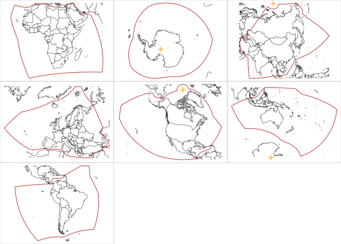
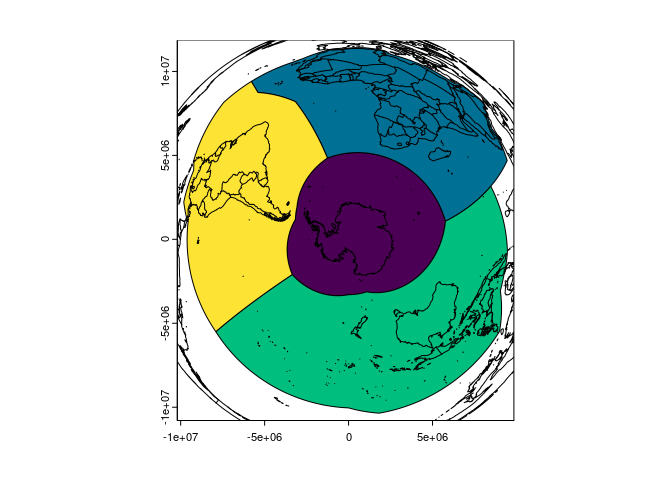

The goal of equi7grid is … currently a barebones get equi7 and plot it.
The Equi7Grid is a project here: https://github.com/TUW-GEO/Equi7Grid
It aims to define 7 global zones that are better than the current UTM and MGRS grid for classifying high resolution satellite imagery.
This plots each zone with its local centre in native Azimuthal Equidistant projection, the orange point shows the poles when they are in the frame.
library(equi7grid)
f <- fs::dir_ls("data-raw", regexp = "fgb$")
data("equi7grid_crs")
crs7 <- equi7grid::crs7()
m <- do.call(cbind, maps::map(plot = F)[1:2])
library(terra)
#> terra 1.7.71
par(mfrow = n2mfrow(length(f)), mar = rep(0, 4))
for (i in seq_along(f)) {
v <- vect(f[i])
ex <- as.vector(ext(v))
m1 <- project(m, to = crs7[i], from = "EPSG:4326")
m1 <- m1[m1[,1] >= ex[1] & m1[,1] <= ex[2] & m1[,2] >= ex[3] & m1[,2] <= ex[4], ]
plot(NA, axes = FALSE, xlim = ex[1:2], ylim = ex[3:4], asp = 1, xlab = "", ylab = "")
plot(v, axes = F, border = "firebrick", add = TRUE)
lines(m1, col = rgb(0, 0, 0, .5))
pt <- cbind(0, c(-90, 90))
p0 <- project(pt, to = crs7[i], from = "EPSG:4326")
points(p0, pch = "+", cex = 2, col = "orange")
box(col = "lightgrey")
}
#> Warning: [project] 1972 failed transformations
#> Warning: [project] 1972 failed transformations
#> Warning: [project] 1972 failed transformations
#> Warning: [project] 1972 failed transformations
#> Warning: [project] 1972 failed transformations
#> Warning: [project] 1972 failed transformations
#> Warning: [project] 1972 failed transformations
In the package we can read the entire set from a single FlatGeobuf, but you’ll need to use them locally as they don’t make sense in one single CRS.
The crs is recorded on each, but obviously we can craft our own scene and projection, here we just focus on the south in LAEA.
library(equi7grid)
fgb <- system.file("extdata/equi7_longlat.fgb", package = "equi7grid", mustWork = TRUE)
library(terra)
x <- vect(fgb)
m <- do.call(cbind, maps::map(plot = F)[1:2])
crs <- "+proj=laea +lat_0=-90"
plot(project(x[-(3:5), ], crs), col = hcl.colors(4))
lines(project(m, to = crs, from = "EPSG:4326"))
#> Warning: [project] 1972 failed transformations